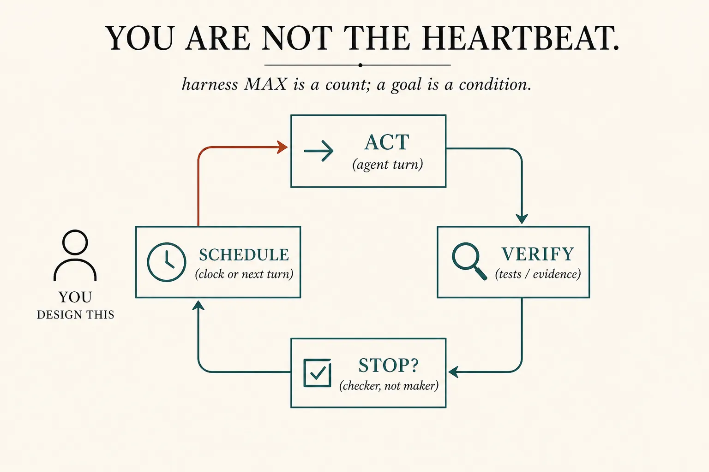
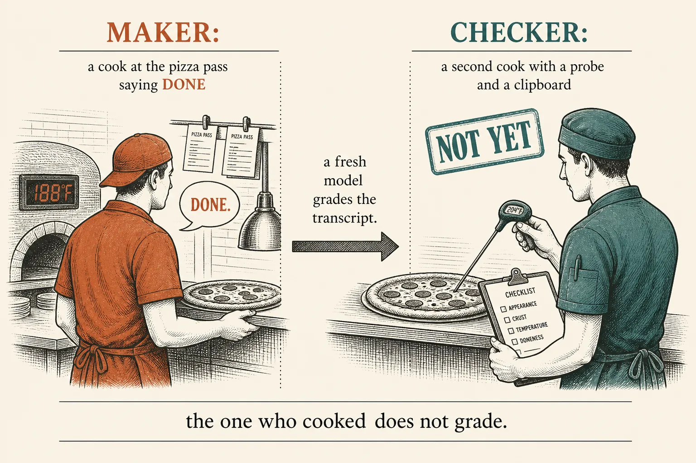
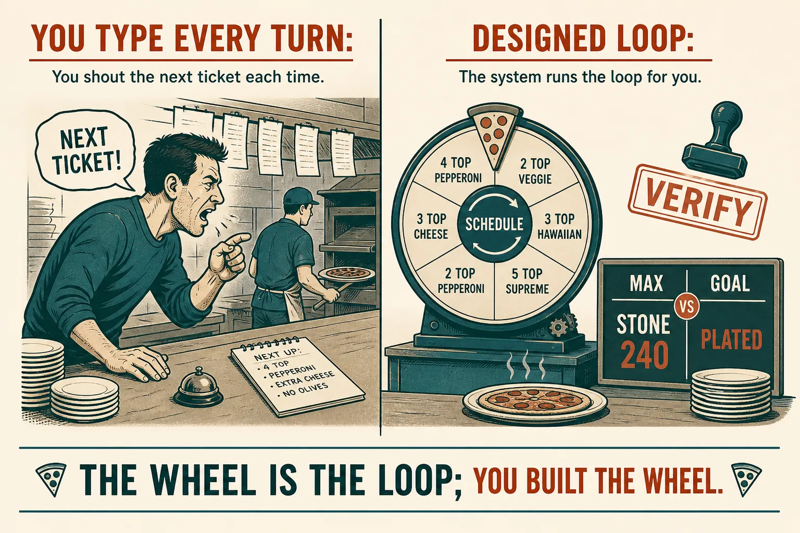

Loop engineering
You design the heartbeat
Lesson 0006 is the inner while: the model picks the next tool. Lesson 0007 is the box around one session. Loop engineering is who starts the next turn when you are not typing — and who is allowed to say “done.”
What this is. Replacing yourself as the person who prompts. Cherny: write loops that prompt Claude. Claude Code’s /goal keeps working until a condition holds; a separate small model grades the transcript after each turn. Keep Claude working toward a goal · Osmani, Loop Engineering (craft name, 2026)
What this is not. A new kind of model. The inner agent loop. The harness jobs (allow · run · stop · show). Plugins, worktrees, or a whole factory. Not a ChatGPT menu item named “Loop.”
- 1 · VerifyA check that leaves evidence in the transcript. Claims are not proof.
- 2 · StopA condition, graded by a checker — not the maker, not a MAX count.
- 3 · ScheduleThe next turn starts on a clock, a hook, or “not yet.” You are not Enter.
Verify · stop · schedule. The inner loop from 0006 does not change. You stopped being its metronome.

You sit outside the cycle. That is the design choice tonight — same as 0006’s “you draw the path,” one floor up.
Three loops, three jobs
Inner loop: the model writes slips until it answers (0006). Harness: your code around that session — stamp, retry, MAX, show the plan (0007). Loop engineering: after that session (or that turn) something else decides whether to kick again. Auto mode still only approves tools inside one turn. /goal starts the next turn without you. Same /goal page · “Compare ways to keep a session running”
/goal = after each turn. /loop = a time interval. A Stop hook = your script. Cursor has the same three shapes (hooks, /loop, Automations).

Load-bearing split. Anthropic’s long-running agents: the model declares victory too early unless a feature list and tests exist. Effective harnesses for long-running agents
One goal · walnut crumb
# YOU ARE THE LOOP
you: "is the stone ready?"
you: "probe it"
you: "plate when it hits 240"
# A CONDITION, A CHECKER
/goal stone is 240°C AND walnut crumb is plated
(proof: probe_stone exits 240; plate() ran)
after each turn:
small model reads the transcript
"not yet" → another turn, reason becomes the next hint
"met" → goal clears. You did not press Enter.
# A CLOCK (no session open)
06:00 cron → read NOTES.md → same goal if leftover
What this shows. Write a condition the transcript can demonstrate — the evaluator does not run the probe itself. “I think we’re done” fails. probe_stone() → 240 works. Include a bound if you need one (“or stop after 20 turns”). Maker and checker stay split: that is /goal under the hood, a prompt-based Stop hook.

Kitchen only to make the heartbeat concrete. The load-bearing picture is the cycle.
Skill: name who kicked
Manual is you. Verify leaves a probe in the log. Stop is a checker verdict. Schedule is the clock — you are not in the room.
Same ticket, four heartbeats
Harness stop vs goal stop
Harness MAX (0007)
A count, a timeout, or a human pause. Protects the till. Does not know if the stone is 240.
Maker says done
The agent that cooked grades itself. Anthropic watched this declare the whole app finished too early.
Checker stop
A fresh model (or a script) reads evidence. /goal, a Stop hook, or a verify sub-agent (0011).
Parked: plugins (how a bundle arrives), git worktrees (parallel checkouts), the full “factory” Osmani lists. You already have skills, notes on disk, and helpers. Tonight is only the heartbeat. Token cost of an unattended loop can run wild — bound it. You still read what shipped; the loop does not retire the engineer.
Check
Primary source. The product form: /goal (condition, fresh evaluator, vs /loop vs Stop hooks). The failure it exists to fix: Effective harnesses for long-running agents (declares victory too early; tests as a human would). The craft name and Cherny line: Loop Engineering. You already have hooks in this editor: Cursor hooks · Automations.
Card: loop engineering. Last box: the harness. Last helper: sub-agents.